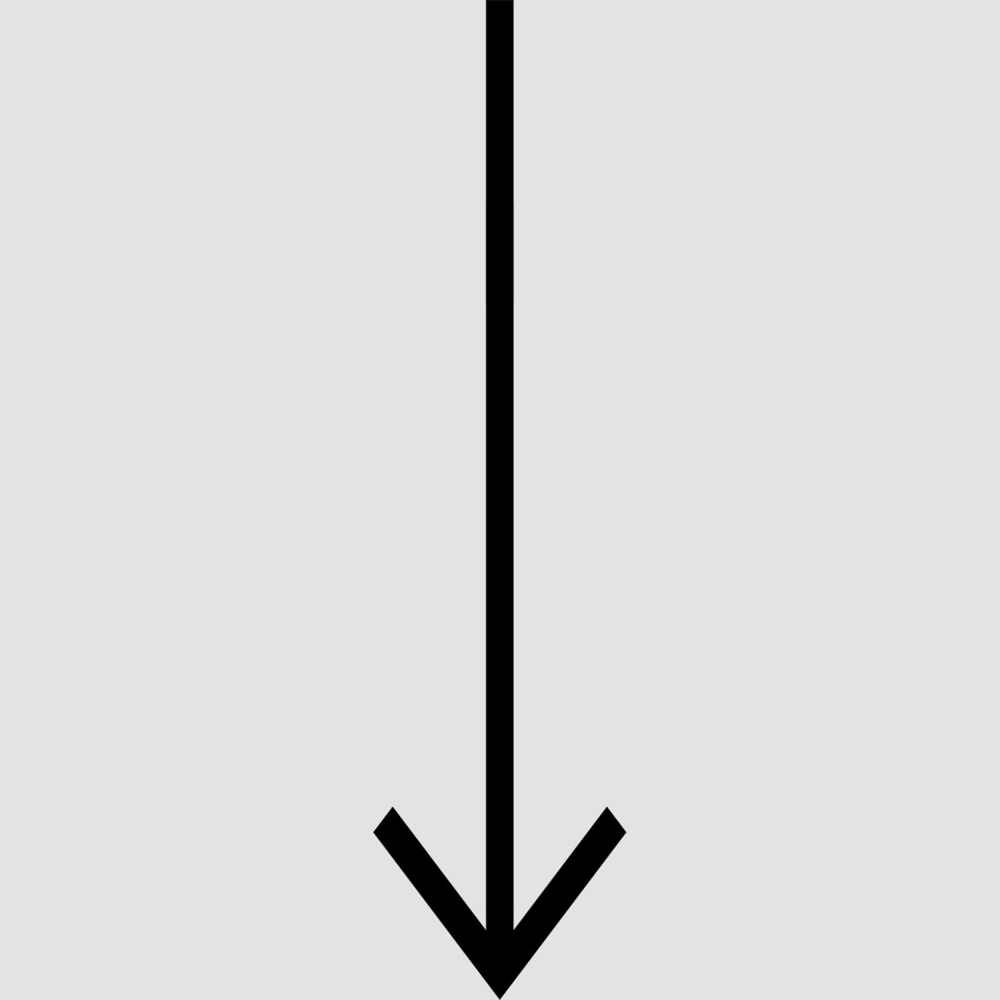

{% extends "base.html" %} {% block content %}
1700
1800
1900
2000
{% set count = namespace(a=0) %} {% for k, v in sorted_lines.items() %}
{{k}}
{% for post in v %} {% if post.visible == 'yes' %}

{{post.header}}
{{start_text[count.a]}}
{% set count.a = count.a + 1 %}
{% endif %} {% endfor %} {% endfor %} {% endblock content %}